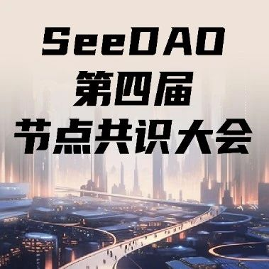

SeeDAO第四届节点共识大会即将召开!
作者: SeeDAO
第四届 SeeDAO 节点共识大会时间：9 月 1 日~9 月 3 日

第四届 SeeDAO 节点共识大会时间
9 月 1 日~9 月 3 日
根据 SeeDAO 节点共识大会规则，截至 8 月 28 日，符合 SCR 有效积分数总额 20000 （含）以上、本季积分获得 4,000 分以上并持有 SGN 者，在本季具有节点身份 Claim 权力，在 Claim 后方得算作正式节点。https://www.notion.so/d1ffd398f61746a198bc81f0fe349600?v=56aefca5a6a24561a417f3a17f208d08具备节点资格的社区成员需在https://node.seedao.xyz/ 完成节点 SBT Claim，才能成为正式有效节点。活动网站中的 Claim 按钮（以太坊主网）已开放 mint ！欢迎大家登入完成节点 Claim！Claim 完成后，可在 Opensea 等 NFT 平台查看自己的节点 NFT，后续可据此 SBT 进行社区重大提案投票治理。* SeeDAO 的节点在整个社区治理体系中位于顶层，SeeDAO 节点共识大会也是社区最高权力机构，节点身份在其有效期内拥有决议节点大会提案、P3 提案的权利，并可通过参与治理获得治理积分收益。节点 SBT Claim 地址
1. 在 SeeDAO Discord 身份验证台频道 验证获取“节点S4”身份，获得访问“节点讨论区”的权限。操作流程详见:
https://www.notion.so/seedao/Discord-db4f4fa41e8d42008039e7786f977483
https://www.notion.so/d25f6f9cf47e4b64a512a8693fa5636c提示：SeeDAO第四届市政厅竞选招募 Last Call ！内容整理 | Vincent
排版 | T1NG
审核 | Ines